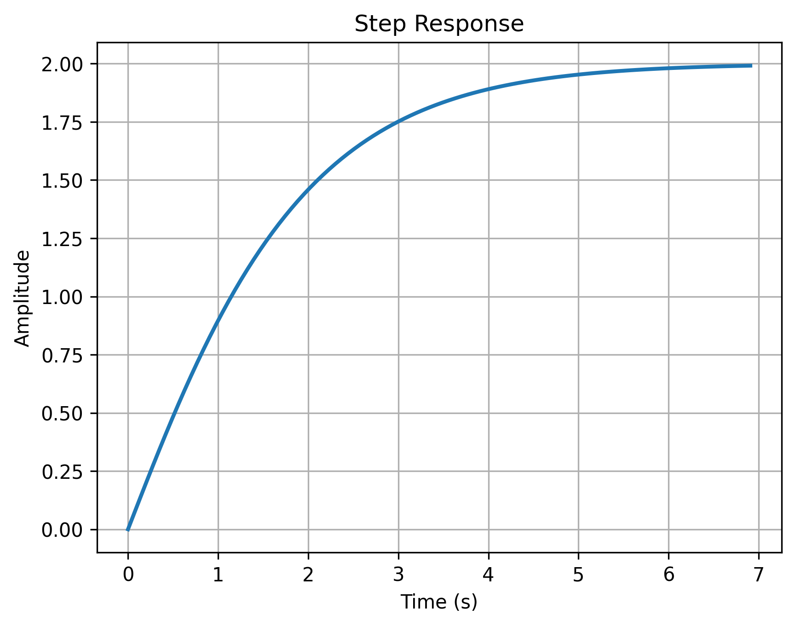

Control System Design with Python
Introduction to Python for Control Systems
Python is a versatile programming language that's excellent for control systems engineering. We'll use several key libraries:
- numpy for numerical computations
- control for control systems analysis
- matplotlib for plotting
Basic Python Concepts
Python's syntax is clean and readable. Here are some basic examples:
# Basic variable assignments
x = 123.3
text = "Some text"
flag = True
print(f"x = {x}, text = {text}, flag = {flag}")
# Lists (similar to arrays in other languages)
x = [1, 2, 3, 4]
print("List x:", x)
# Using NumPy for numerical arrays
import numpy as np
x = np.array([1, 2, 3, 4])
print("NumPy array x:", x)
# Creating arrays of zeros and ones
x = np.zeros(4)
y = np.ones((2, 2))
print("Array of zeros:", x)
print("2x2 array of ones:\n", y)
Output:
x = 123.3, text = Some text, flag = True
List x: [1, 2, 3, 4]
NumPy array x: [1 2 3 4]
Array of zeros: [0. 0. 0. 0.]
2x2 array of ones:
[[1. 1.]
[1. 1.]]
Functions in Python
Functions are defined using the def keyword:
def square(x):
return x * x
x = 2
y = square(x)
print(f"The square of {x} is {y}")
# Let's try with a list of numbers
numbers = [1, 2, 3, 4]
squares = [square(n) for n in numbers]
print(f"The squares of {numbers} are {squares}")
Control Systems with Python Control
The control library provides powerful tools for control systems analysis. Let's look at some basic examples:
Single Step Response
Here's how to create a transfer function and plot its step response:
import control
import numpy as np
import matplotlib.pyplot as plt
# Create a transfer function G(s) = (s + 2)/(s^2 + 2s + 1)
s = control.TransferFunction.s
G = control.TransferFunction([1, 2], [1, 2, 1])
# Print transfer function
print("Transfer function G(s):")
print(G)
# Generate and plot step response
t, y = control.step_response(G)
plt.figure() # Using default size
plt.plot(t, y, linewidth=2)
plt.grid(True)
plt.title('Step Response')
plt.xlabel('Time (s)')
plt.ylabel('Amplitude')
plt.show()

Multiple Step Responses
We can also compare step responses of different systems:
import control
import numpy as np
import matplotlib.pyplot as plt
# Create figure
plt.figure() # Using default size
t = np.linspace(0, 5, 500)
# Generate step responses for different systems
for a in range(1, 6):
# Create transfer function G(s) = a/(s + a)
G = control.TransferFunction([a], [1, a])
print(f"\nTransfer function for a={a}:")
print(G)
# Get and plot step response
t, y = control.step_response(G, t)
plt.plot(t, y, linewidth=2, label=f'a={a}')
plt.grid(True)
plt.xlabel('Time (s)')
plt.ylabel('Amplitude')
plt.title('Step Responses for Different Systems')
plt.legend(loc='lower right')
plt.show()
Output:
Transfer function for a=1:
1
-----
s + 1
Transfer function for a=2:
2
-----
s + 2
Transfer function for a=3:
3
-----
s + 3
Transfer function for a=4:
4
-----
s + 4
Transfer function for a=5:
5
-----
s + 5

This example shows how to: 1. Create transfer functions with different parameters 2. Generate step responses 3. Plot multiple responses on the same graph 4. Add proper labels and legends
The Python ecosystem provides these powerful tools for control systems analysis, making it an excellent choice for control system design and analysis.